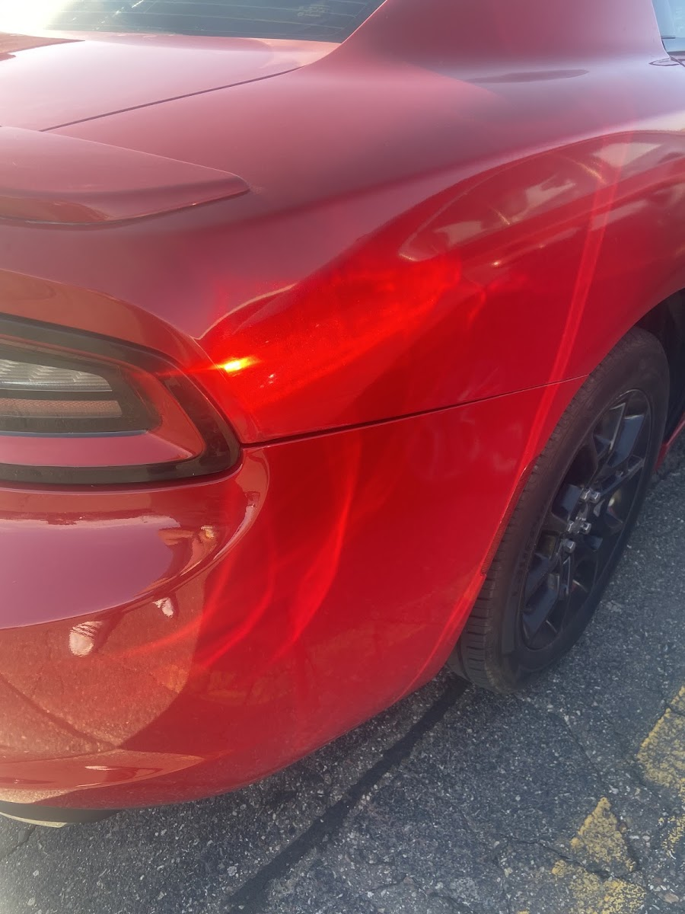

Auto Paint in South St Paul, MN
Auto Body Lopez handles auto paint and refinishing for drivers across South St Paul and the south metro — careful, exact color matching, including hard metallic and pearl finishes, so a repair disappears instead of standing out.
Auto Paint South St Paul Drivers Trust for a Perfect Match
If you're looking for auto paint in South St Paul MN, the whole job comes down to one thing: does the new paint disappear into the old paint, or can you spot it from across the parking lot? That's the question we ask on every job. Whether we're refinishing a single door after a dent repair or repainting a full panel after a collision, we take the time to get the color, sheen, and blend right — not just close enough. Customers have told us they couldn't tell anything had happened to their car after we were done, even on tricky metallic pearl colors, and that's exactly the outcome we aim for every time.
What Our Auto Paint Service Covers
Auto paint work is more than spraying a new coat — matching a factory finish takes real attention to detail:
- Color matching — identifying your vehicle's exact factory color, including metallic and pearl finishes that are harder to blend.
- Single-panel and spot repainting — refinishing just the damaged panel or door when a full repaint isn't needed.
- Full panel and multi-panel paint — for larger repairs where the color needs to blend across several sections.
- Surface prep and priming — sanding, filling, and priming so the new paint bonds and lays smooth.
- Clear coat and finish work — the final layer that gives your paint its shine and protects it going forward.
- Touch-up on pinpoint scratches — small chips and scratches near a repair blended in along with the main job.
The goal on every job is the same: paint that reads as original, not repaired.
Signs You Need Auto Paint Work
Paint damage isn't always from a collision. Here's what tends to bring drivers in:
- A scraped or scratched panel down to primer or bare metal.
- Faded, chipped, or peeling paint on an older panel.
- A repaired dent or panel that still needs to be refinished to match.
- Rust spots where paint has failed and moisture got underneath.
- A mismatched panel from a previous repair somewhere else.
- Wanting a full repaint on a vehicle you plan to keep for years.
Bare metal or exposed primer is worth addressing sooner than later — the longer it sits exposed, especially through a Minnesota winter, the more likely it is to start rusting.
What to Expect
We start by identifying your vehicle's exact factory color and checking it against the panel we're working on, since paint can fade or shift slightly over time even on an unrepaired car. From there we prep the surface, apply primer if needed, and lay down color coats until the match is right — then clear coat and finish. On a job like a small panel or door, that's often turned around in a couple of days; a larger job takes longer. Either way, we don't call a paint job done until the match is right, not just close.
Why Paint Matching Matters More in a Minnesota Winter
South St Paul winters are hard on a car's finish. Road salt sits on paint for months at a time and works its way into any chip or scratch, which is exactly how small paint damage turns into a rust problem by spring. Cold temperatures also make bare or thin paint more brittle and prone to chipping from road debris and ice. Getting a scratch or chip properly refinished before winter sets in — rather than waiting until the damage spreads — is one of the simplest ways to protect a South St Paul vehicle's body long-term, and it's part of why we treat even small paint jobs with the same care as a full repaint.

Areas We Serve
We're based at 1449 Concord St S in South St Paul (South Saint Paul), Minnesota, and handle auto paint and refinishing for drivers throughout South St Paul, West St Paul, Inver Grove Heights, and Dakota County, as well as the broader south metro.
Why Drivers Choose Auto Body Lopez for Auto Paint
You get a color match that holds up to close inspection, even on tricky metallic and pearl finishes, and a fair, reasonable price for the work. One customer had a dent repaired and repainted in a special metallic pearl color, right down to a few pinpoint scratches nearby, and said you couldn't tell anything had happened — all in 48 hours at a reasonable cash price. That kind of result is what keeps South St Paul drivers coming back to us for their paint work.
Auto Paint FAQ
It depends on whether you need a single panel touched up or a full repaint, and on the color and finish involved. We give you a fair, reasonable price after seeing the vehicle. Call or text (651) 756-8621 for a quote.
Yes — we identify your vehicle's factory color and match it carefully, including harder-to-blend metallic and pearl finishes, so the repaired panel doesn't stand out from the rest of the car.
Yes, we regularly do single-panel and spot repaints when a full repaint isn't needed, blending the new paint into the surrounding factory finish.
A single panel or door has been turned around in as little as 48 hours for a past customer, while larger multi-panel or full repaints take longer. We'll give you a realistic timeline once we've seen your vehicle.